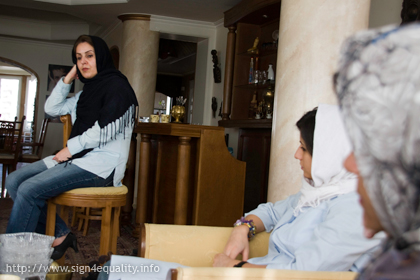
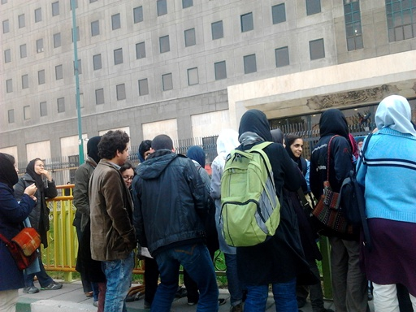
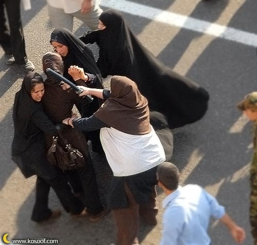

تغییر برای برابری
تغییر برای برابریبثينة كامل تنها زنی است که رسما نامزدی خویش را برای شرکت در انتخابات آینده ریاست جمهوری مصر، که قرار است در ماه مه امسال برگزار شود، اعلام کرده است. بثينة یکی از چهره های شناخته شده مصر و از مجریان معروف رادیو و تلویزیون و فعالین اجتماعی است. خانم کامل مدافع دمکراسی و جدایی دین از دولت، دولت غیرنظامی و حقوق برابر زنان است. ..
پذيرش > واژه كليدها > صفحه بندی > ستون وسط
ستون وسط
مقالهها
-
 کاندیدای زن و بازی سیاسی در آستانه انتخابات ریاست جمهوری مصر
کاندیدای زن و بازی سیاسی در آستانه انتخابات ریاست جمهوری مصر
26 فوريه 2012 -

غرفه 9 موزه سینما یا سلول های بند 209 زندان اوین؟
4 آوريل 2010جعفر پناهی از جمله فیلمسازانیست که هرگز نسبت به مسایل اجتماعی جامعه خود بی تفاوت نبوده است و همواره از حامیان بسیاری از حرکت های اجتماعی و از جمله کمپین یک ملیون امضا بوده است. به همین بهانه جمعی از فعالین کمپین یک ملیون امضا به دیدار خانواده جعفر پناهی رفتند تا ضمن تبریک سال نو همدلی خود را با خانواده این فیلم ساز ایرانی نشان دهند .
-
آیا بلوغ فیزیکی ملاک رشد عقلانی است؟رنگین کمان سن درقانون و آسیب هایی که کودکان می ببیند
26 دسامبر 2011, بوسيلهى pariمقنن نسبت به اعمال مالی کودک خیلی دغدغه دارد اما نسبت به شخصیت پذیری کودک چنین دغدغه ای ندارد . گرچه عامه جامعه معتقد هست که ضرر مادی جبران پذیر هست ضرر غیر مادی ناعلاج هست اما مقنن درست عکس آن عمل کرده است .
-
الهه امانی:کمپین یک میلیون امضاء روح جسارت و شجاعت برای غنا بخشیدن به گفتمان ضد تبعیض است
19 سپتامبر 2010ائتلاف هائی چون کمپین یک میلیون امضاء، ائتلاف مقابله با "لایحه حمایت خانواده" کمپین ضد سنگسار و سایر حرکات اجتماعی می توانند به بستر ماندگاری برای تغییرات اجتماعی، مستند سازی، فرهنگ سازی، پرورش کادرهای کار آزموده، گسترش ادبیات جنسیتی و فمینیستی، تبدیل گردند. کمپین یک میلیون امضاء و صدها وبلاگ، دهها سایت فعال مربوط به مسائل زنان، نشریات، کارهای هنری، گفتمان برابری زنان را در جامعه تقویت کردند...
-

ادامه پيگيري هاي و ضعيت نسرين ستوده از سوي فعالان زن این بار از مجلس
4 دسامبر 2012صبح امروز،سهشنبه 13 آذر 91 حدود 50 نفر ازفعالان زن به همراه آقای رضا خندان همسر نسرين ستوده در راستاي پيگيري وضعيت اين وكيل پايه يك دادگستري و فعال حقوق زنان و درخواست به حق او مبني بر رفع ممنوعالخروج بودن دختر 12 سالهاش مهراوه و همسرش به محل ملاقات عمومي نمايندگان مجلس شوراي اسلامي رفتند و خواستار ملاقات با تعدادي از نمايندگان مجلس شدند...
-
 نسرین ستوده، پس از 49 روز با لغو حکم ممنوع الخروجی دخترش به اعتصاب غذای خود پایان داد
نسرین ستوده، پس از 49 روز با لغو حکم ممنوع الخروجی دخترش به اعتصاب غذای خود پایان داد
4 دسامبر 2012نسرین ستوده، با لغو حکم ممنوع الخروجی دخترش مهراوه، بعد از 49 روز به اعتصاب غذای خود پایان داد. رضا خندان، همسر نسرین ستوده، در صفحه فیس بوک خود نوشته است:« در ملاقات استثنایی عصر امروز، نسرین با توجه به برداشتن محدویت قضایی مهراوه به اعتصاب خود پایان داد». رضا خندان از فعالان زن که در این چند روز از کانالهای مختلف، پیگیر وضعیت نسرین ستوده شده بودند، تشکر کرده است.
-
خشونت و تحقیرعامل تحلیل رفتن قشرخاکستری مغز
4 ژانويه 2012خشونت تاثیرات متفاوتی بر زن و مرد می گذارد. در مردان، آن بخش از قشر خاکستری که مسئول کنترل انگیزش های ناگهانی(impulse control) و یا اعتیاد است، از بین می رود. در زنان تحلیل رفتن قشر خاکستری در قسمتی که در افسردگی ها نیز معمول است ، یافته شده است
-
 شکستن سکوت، شیوه فراگیر مقابله با خشونت
شکستن سکوت، شیوه فراگیر مقابله با خشونت
26 نوامبر 2011, بوسيلهى pariخشونت علیه زنان در مقیاسهای کوچک و بزرگ، آشکار و پنهان، از خانواده گرفته تا کوچه، خیابان و شهر و در سراسر دنیا در قرن بیست و یکم همچنان قربانی می گیرد. پی آمدها و آسیبهای روانی ناشی از خشونت تاثیرات جبران ناپذیری بر جای می گذارد. خشونت چیست و چه عواملی مرد را به اعمال خشونت علیه زن وا می دارد؟ ژیلا افتخاری روانشناس بالینی در جستجوی پاسخ به این سوال از دیدگاه روانشناسی بر آمده است.}
-

بیانیه بیش از ششصد نفر از فعالان جنبش زنان به مناسبت 22 خرداد
16 ژوئن 2010, بوسيلهى koocheما به عنوان جمعی از فعالان جنبش زنان ایران، خواهان پایان دادن به بازداشت و مجازات غیرقانونی همه فعالان مدنی بالاخص فعالان زن در بند هستیم و می خواهیم خواست حداقلی تساوی جنسیتی در کلیه قوانین ایران تحقق یابد و امید داریم که روزی به رویای مان برای دستیابی به جامعه ای برابر، عادلانه و بدون تبعیض دست یابیم.
-
 آشفتگی ارزش ها در قوانین مذهبی و توسعه نیافتگی اخلاق/نگاهی به قانون قصاص از روزنه اخلاق/ مژگان ثروتی
آشفتگی ارزش ها در قوانین مذهبی و توسعه نیافتگی اخلاق/نگاهی به قانون قصاص از روزنه اخلاق/ مژگان ثروتی
20 اكتبر 2009, بوسيلهى pariدر این اندیشه ام ، آیا سیستمی که حداقلی از امنیت اقتصادی، اجتماعی و سیاسی را ایجاد نکرده است و خود عامل نابساما نی های اجتماعی است، می تواند خود دوباره در نقش داور و مدعی پاسدار اصول اخلاقی و مجری عدالت در جامعه ظاهر شده و قربانی های سیستم خود را محاکمه و به مجازات زندان و اعدام محکوم کند؟
0 | ... | 50 | 60 | 70 | 80 | 90 | 100 | 110 | 120 | 130 | ... | 450